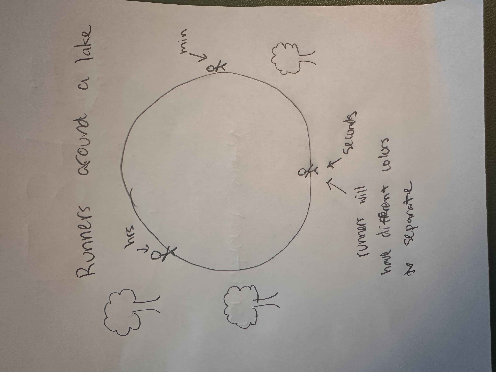
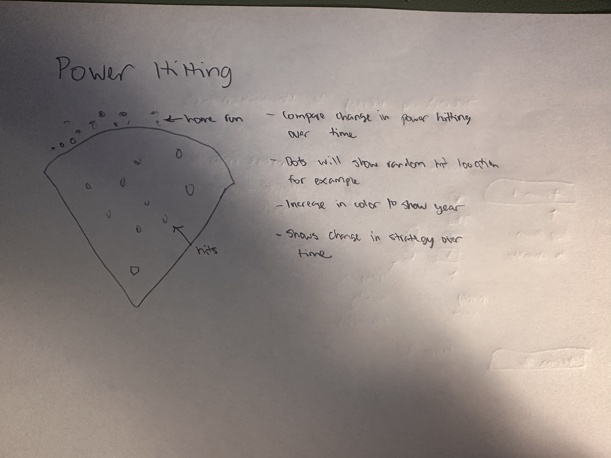
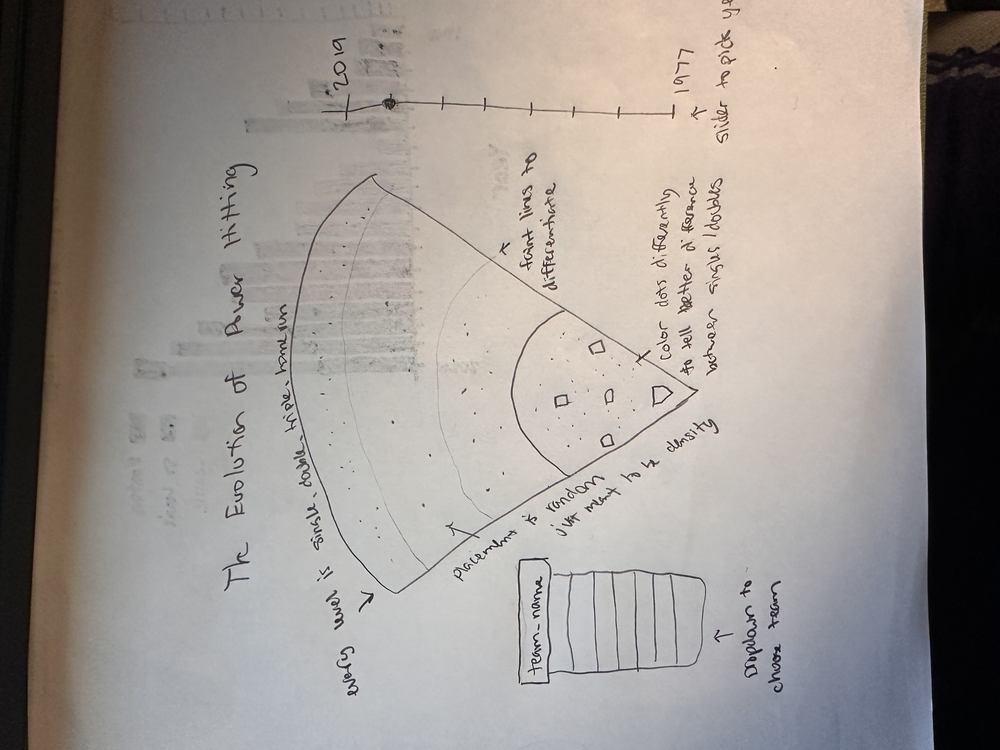
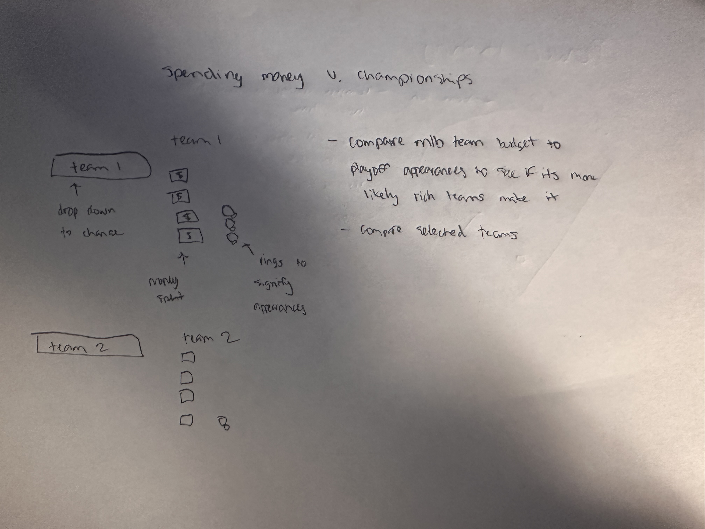
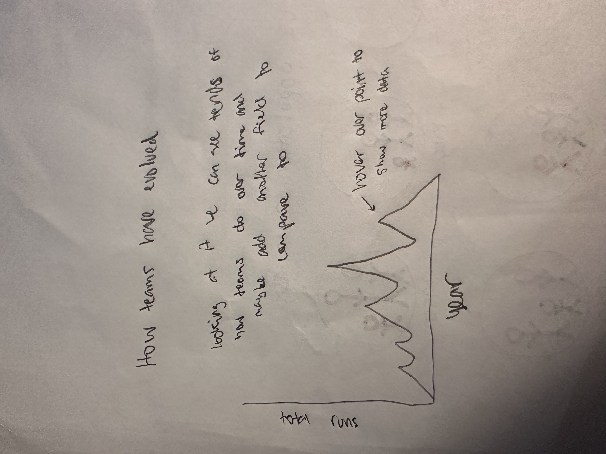

Sketch narrative
This design is under the context of running. The idea of it is that runners like to usually run loops around lakes as they are easy and have a set length. I wanted to depict this in clock form where the runners represent the time being the hands on a clock around the lake.
- Design decisions: I chose to add running lanes around the lake to better show the difference between the runners. I also made the seconds be on the inside lane because they would ideally be running around the lake quicker than the outside lane. I also used color to show the difference in the runners. I wanted to use a similar pallet for all 3 so I chose a red to yellow fade.
- Future work: One idea that was that the exact time is hard to tell so a critique was to add a way to add markers showing time. Another idea for the future is to have the sun be variable and move through the sky as time passes.
Sketch evolution
Replace these images with your own sketch evolution images.



Sketch narrative
For this running clock design, I chose to represent the ground as time passes when runners go over it. Every large step is an hour, medium is minutes, and small is seconds. I thought that with hours being larger that a larger person would be stepping. The other steps follow the same concept.
- Design decisions: Some choices that I made for this design were to have every step be a slightly light color. Smaller people leave less deep footprints so the color should be lighter in that case. I also allowed the placement of the footprints to overlap because footprints are likely to overlap in real life.
- Future work: One idea that I had to improve this design based on critique are to represent night time better. If it were later in the day then there would be less light and the colors would be closer to black or gray.
Sketch narrative
For this clock that is based on running, I chose to show this in a smart watch form. I tried to get incrementally larger values tracked for steps being miles, flights of steps, and actual steps.
- Design decisions: Some design choices that I made were to have larger values for tracking steps be values for larger types of time like hours vs. minutes. I also wanted to differ the time with different colors. The colors that I picked were based off of rgb because I know some health tracking apps have similar designs to this.
- Future work: One thought that came up during critique was that it was fairly bland. In the future I would want to expand the watch face and maybe add more data like weather so that it has more use.
Design Notes
- Why did you choose the dataset and story? I chose this dataset because I really enjoy the statistics of baseball. Especially right now with the world series going on there are thousands of statistics being recorded every game. From any of these we can learn so much about the strategy and how baseball has changed over time. I went with a story on power hitting because it is offense is such an important aspect of how games are won. Not only that it has surprisingly a lot of strategy. I wanted to see how the strategy of power hitting has changed over time and the distribution of hits over time.
- Why did you choose that title for your story? I chose the title "The Evolution of Power Hitting in the MLB" because it the idea is to see how power hitting has changed over time. Power hitting is when a batter runs more than one base on a hit. The goal of this is to see how this has changed and if there are patterns over time.
- Explain, is it author-driven or user-driven? (one level of interactivity is enough). What visualization genre is it? I would say that this is user driven. Implementing a way to change teams and time gives the user the ability to look at whatever they want from any team at any point in time. I would say that the genre is closest to a heat map. The idea is that each type of hit being single, double, triple, and homerun has its own area.
- If you can walk someone through this visualization in a talk, how would you describe it? / What is the story being communicated? Over time, the strategy of baseball has changed drastically. From being focused on defense to changing to offense baseball is always changing. This heat map, shown as a baseball field represents how many hits of each type a team hits in a year. If we changed the slider we can also see how it has evolved over time
- Ask two people to go through your visualization (someone who hasn’t seen the progress). For each interview, add an annotated slide that notes what they point out and the narrative they pick up.
- What are the main design principles that guided your encoding choices? I really wanted to make sure that it stayed on the theme of baseball. Introducing a baseball field as the map of a heat map really solidified it in the setting. I also really wanted the colors to be easily understood by the viewer.
- How did you ensure clarity, hierarchy of concepts, and memorability? I tried to incorporate images that were easily recognizable, like a baseball field. Additionally labeling abtract parts like the sections that separate each hit type makes it more easily understood
Chosen Sketches


Not Chosen Sketches

